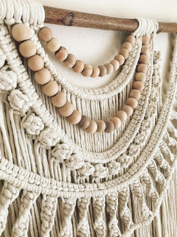
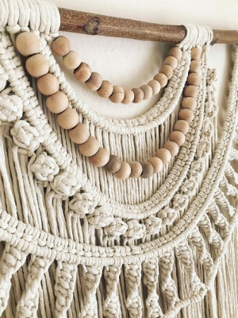
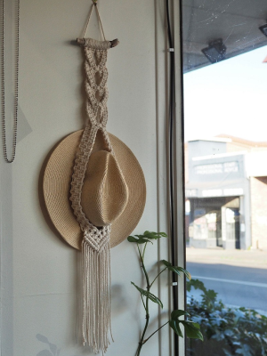
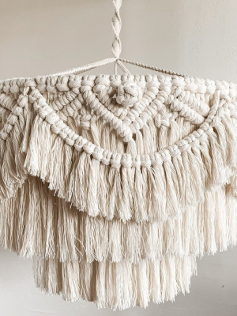
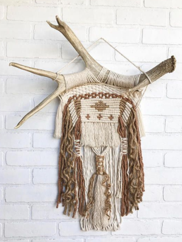
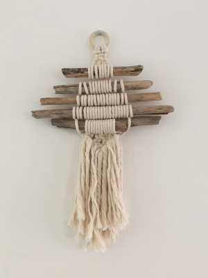
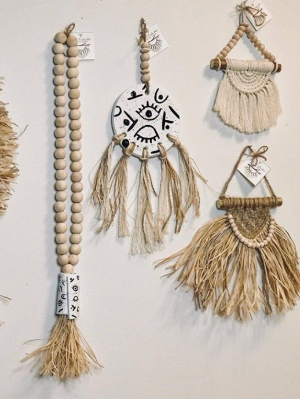

01
Tapiz de macramé realizado con hilo 100% algodón y borlas de madera.
Slow Deco & Boho
un estilo lleno de calma y armonía
01
Tapiz de macramé realizado con hilo 100% algodón y borlas de madera.
02
Portasombrero de macramé para pared.
03
Lámpara textil con técnica de macramé, crean calidez en el ambiente, son un trend en decoración.
04
Tapiz de macramé con asta de ciervo de la Patagonia (ACLARACION! las astas son de desmogue: proceso que ocurre durante las últimas semanas de invierno en donde los venados se desprenden de sus cuernas).
05
Tapiz de macramé realizado con maderas de deriva.
06
Colgantes de cerámica realizados a mano con hilos y tejidos de macramé.